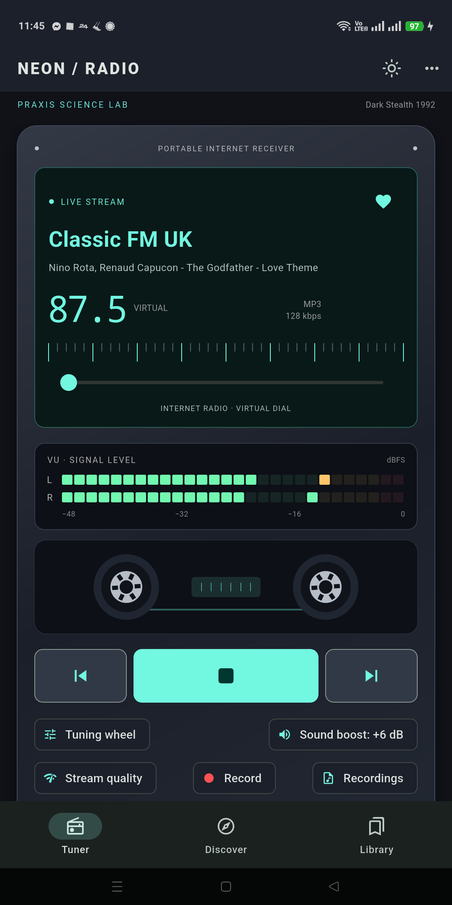
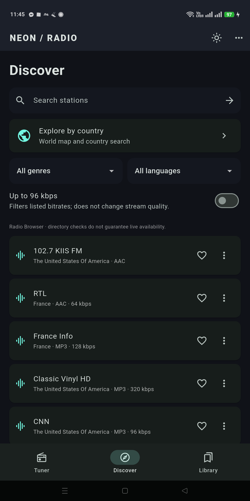
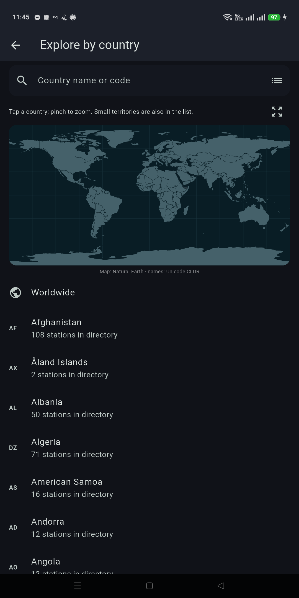

PRAXIS SCIENCE LAB / ANDROID
Neon Radio
Internet radio with a retro dial, favorites, equalizer and local recordings.
In testing Not yet available on Google Play.
Tune into internet radio with a retro boombox interface.
Explore stations by country, genre or name. Use the world map, save Favorites and keep five preset buttons close at hand. Add a direct HTTP/HTTPS stream when a station is missing from the directory.
Listen in the background, control playback from the Android home-screen widget and use a simple Drive screen. Reconnect automatically after network interruptions, with Stop always canceling retries.
Shape the sound with a five-band equalizer, including Classic, and optional sound boost. A cassette display, virtual tuning dial and audio-driven VU bars bring the radio look to life. Reduce animations and use Android text scaling for a quieter interface.
Set a sleep timer. Record a live stream locally as WAV and export it through Android, subject to the rights and terms of the broadcaster. Recording is limited to 30 minutes or 512 MiB per session. Export and import Favorites and presets using a JSON file, without an account.
English is the default; Romanian and Spanish are also included.
This is internet radio: an internet connection is required for live stations. Dial frequencies are virtual, not reception from an FM chip. Stream availability, song metadata and available bitrates depend on the broadcaster. Some stations contain their own advertisements. Chromecast, wake-up alarms and song fingerprint recognition are not included.
The current testing release has commercial advertising disabled. Android Auto integration is under testing and has not yet been verified on a physical car display.
Praxis Science Lab — traiananghel@gmail.com
Inside the app



Language
English by default; Romanian and Spanish available in Settings.
Using the app
Internet required for live streams. Frequencies are virtual. Broadcasters control availability, metadata and their own stream advertising. Record only content you are permitted to record; export and redistribution remain subject to applicable rights. No Play Store listing is available yet.
Praxis Science Lab is the publishing brand used by Traian Anghel. For support or privacy questions, email traiananghel@gmail.com. Include the app name and version. Do not send passwords, medical records, private recordings or other sensitive information.